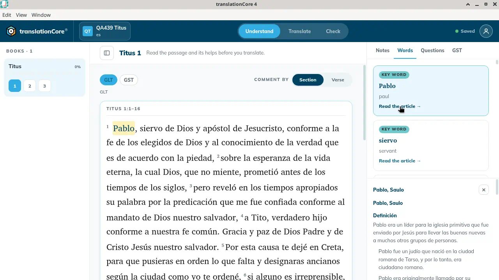
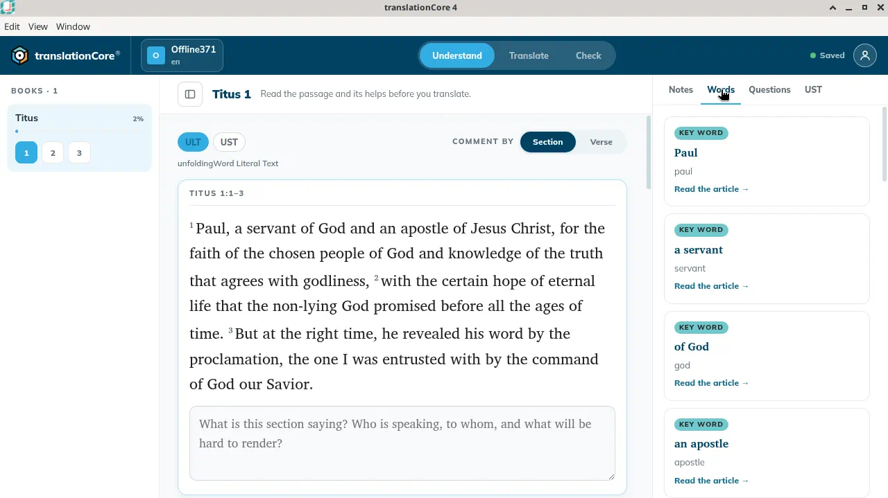
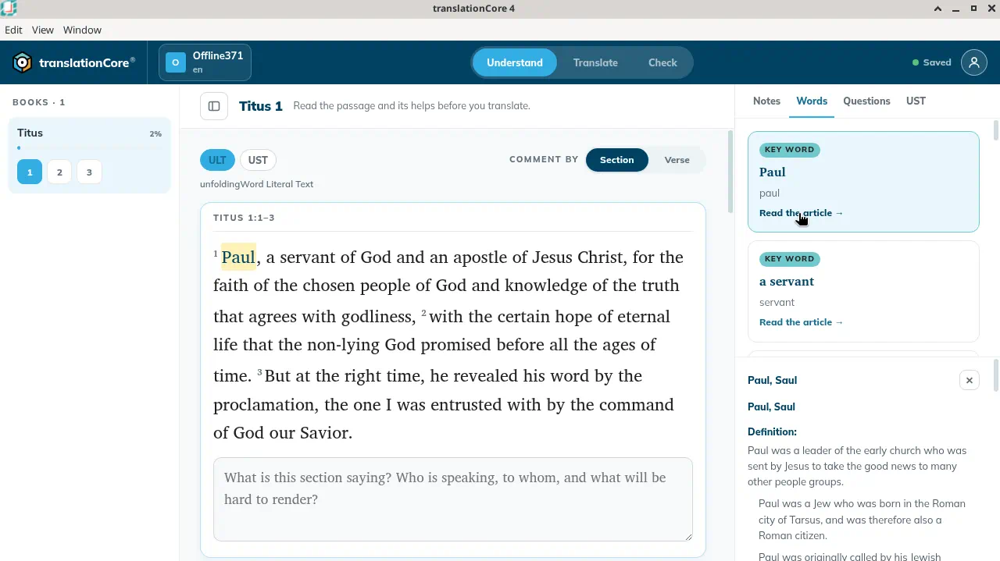

Word links (Translation Words)
Word links point out the key biblical terms in the passage and link each to a Translation Words article that defines it.
Where in the app: Understand or Translate › helps panel › Words › Read the article →
What it is
Translation Words (tW) are short articles about important terms such as grace, apostle or righteous. The word links (TWL) connect each occurrence of such a term in the passage to its article.
When to use it
To translate key terms consistently and accurately.
Step by step
- In Understand, select a section.
- In the helps panel, click Words.
- Point at a card to see which word it is about in the passage.
- Click Read the article → to read the definition and translation suggestions.
- Close the article with ✕.
What you should see
- On a Spanish project each card is marked Key word, names the term in the gateway text (Pablo, siervo, de Dios, apóstol) and shows an English gloss.
- On an English project the card title is the phrase in the text (Paul, a servant, of God, an apostle). Under it is the article's short name (paul, servant, god, apostle). Each card says Key word and Read the article →.
- Read the article → opens the Translation Words article in the panel. Pablo is highlighted in the passage.
Screenshots

Screenshot comingThe Words tab on QA439 Titus 1, with Spanish key-word cards and the Pablo article open.
img/un-word-links-1.png
Screenshot comingOffline371, English, Understand, Titus 1:1–3. Words tab. Cards: Paul / paul, a servant / servant, of God / god, an apostle / apostle. Each says Key word and Read the article.
img/un-word-links-2.png
Screenshot comingOffline371, Paul article open. Title Paul, Saul. Paul is highlighted in the passage. The article was closed again.
img/un-word-links-3.pngTips
- The same terms become check items in Check with Translation Words.
- On Offline371 the four cards for Titus 1:1–3 are Paul, a servant, of God and an apostle. Opening Paul highlights "Paul" in the passage and shows the article "Paul, Saul". It begins: "Paul was a leader of the early church who was sent by Jesus to take the good news to many other people groups." The cards stay in the list above the article. ✕ closes it.
Known limits
- None known.
Related topics
For testers and developers
Code: src/views/HelpsPanel.jsx (words tab), src/data/articles.ts
Journeys: J16